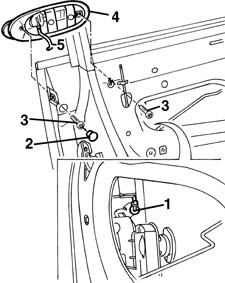

7005C42 front side door barrel/lock connecting linkage - r r with door panel removed
- Path
- Procedures > 70 FITTINGS > 7005 PASSENGER COMPARTMENT FRONT SIDE DOORS > 7005C front lock controls > 7005C42 front side door barrel/lock connecting linkage - r r with door panel removed
- Kind
- repair procedure (removal / refitting; the operation number is the code)
- Applies to
- all engines; all production periods
- Interactive page
- https://sloeber94.github.io/elrnDB-fMltpl/en/#/2892023
Applies to: all engines; all production periods
 Removing
Removing
 Refitting
Refitting7005A04 front side door water guard protection - r r or replace with door panel removed
7005D22 front side door descending window glass guide (one) - r r with door panel (and support frame) removed (rear guide)
1. Disconnect, from the lock side, the linkage connecting to the outer handle.
2. Remove the cover.
3. Undo the outer handle bolts.
4. Remove the handle with linkage from the outside.
5. Disconnect the linkage from the handle.

Applies to: all engines; all production periods
Refitting
RemovingCheck that the linkage is undamaged.
Connect the linkage to the handle.
Fit the handle with linkage.
Tighten the handle bolts.
Fit the cover.
Connect the linkage to the lock.
Check the handle and catch are working properly.
7005D22 front side door descending window glass guide (one) - r r with door panel (and support frame) removed (rear guide)
7005A04 front side door water guard protection - r r or replace with door panel removed
Topics linked from this page (2)
- 7005A04 front side door water guard protection - r r or replace with door panel removed
- 7005D22 front side door descending window glass guide (one) - r r with door panel (and support frame) removed